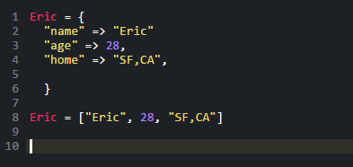

Why use hashes?
They're hard and confusing
10/02/2015
When first learning learn to code and ruby specifically I found myself always asking. Why would I ever use a hash? Any program I tried to create would always fail when I used them. They were confusing and so hard to understand. But after learning more about ruby and more specifically about hashes, I think they are one of the most useful things you can use.
When you think about dictionaries and all the definitions it contains. You can think of it like a hash and what information those usually contain. In a dictionary(a hash) we look up a word(key in a hash) to find its definition(the value of that key). Hashes made a lot more sense to me when I was able to think of them in that sense. We can store all sorts of things in hashes. They also make more sense than arrays in situations where we want to store complex information. I could create a hash for myself and store inside of it, the name of my parents, my age, my location. In an array I would have to remember at what index I stored those answers and could not just look up the appropriate key(age, mom, dad, etc.)
